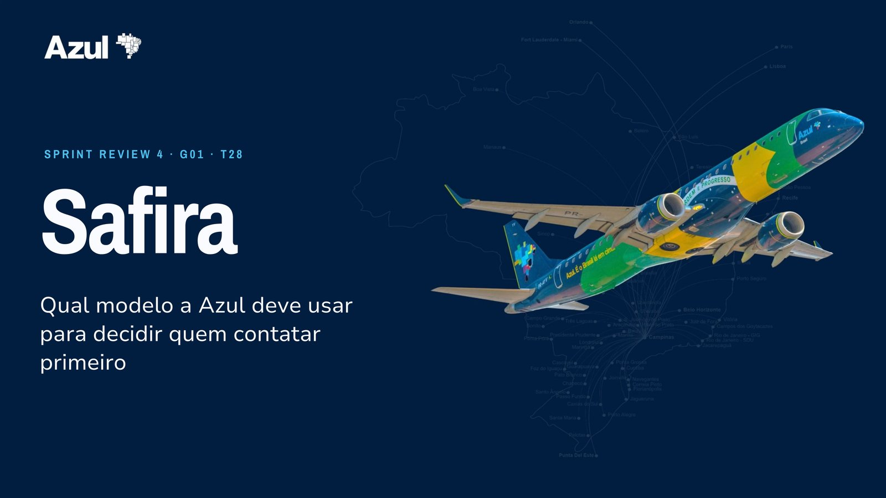
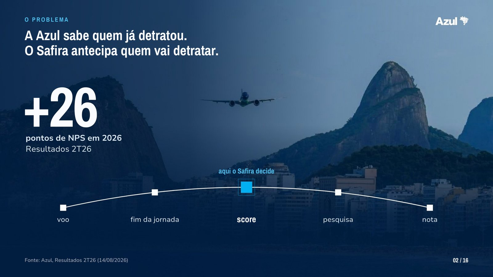
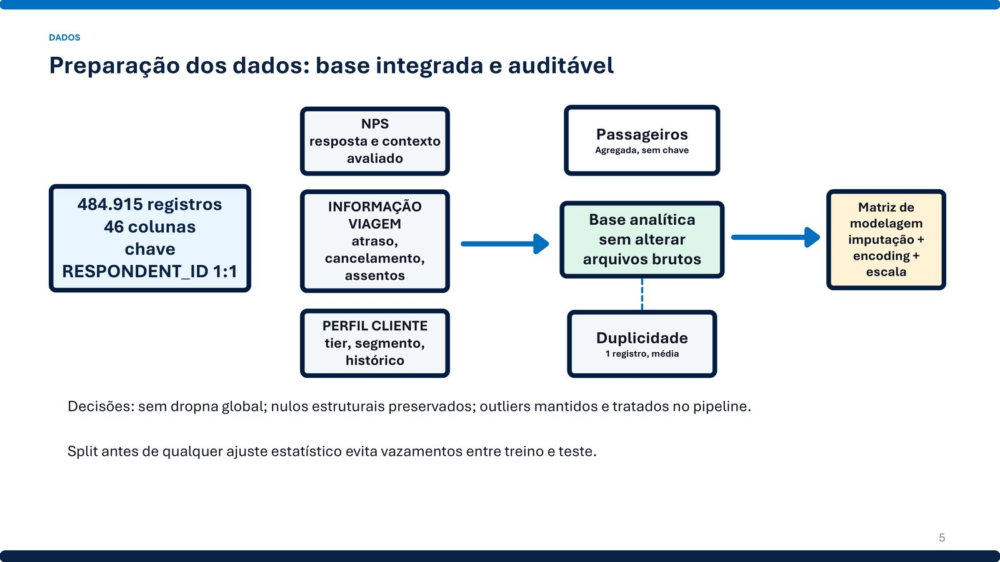
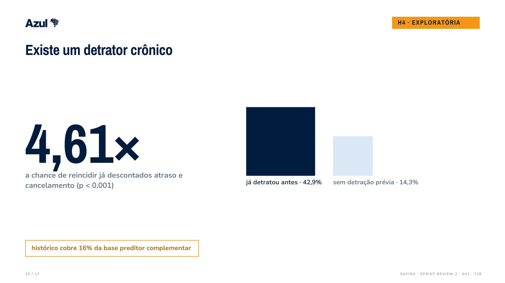
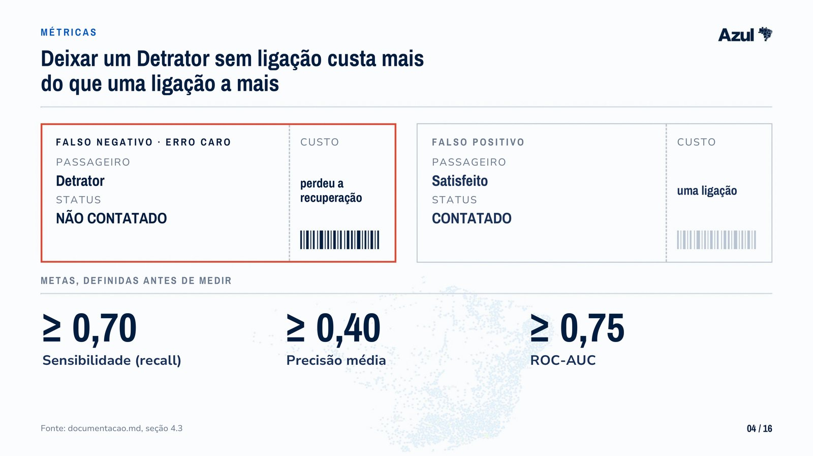
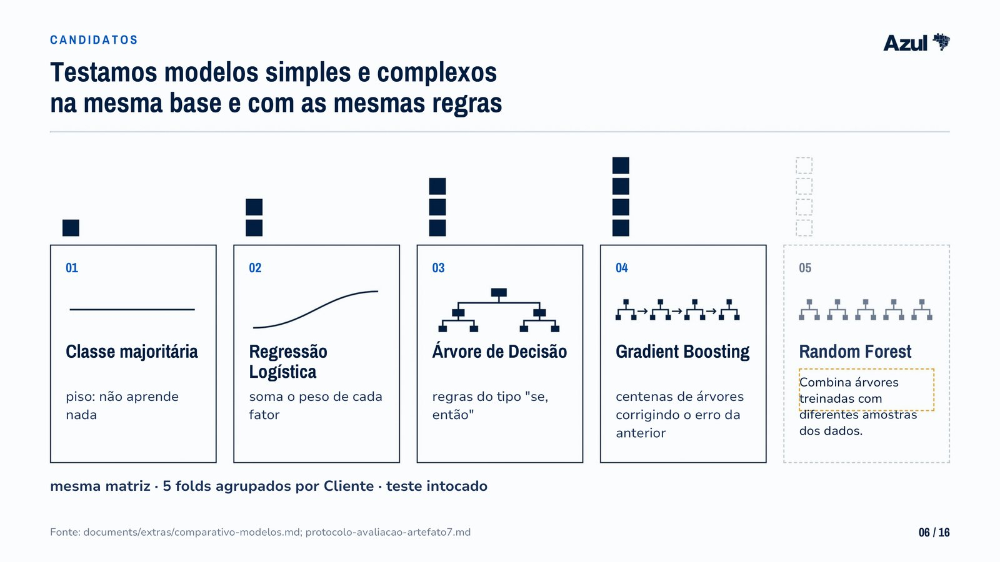
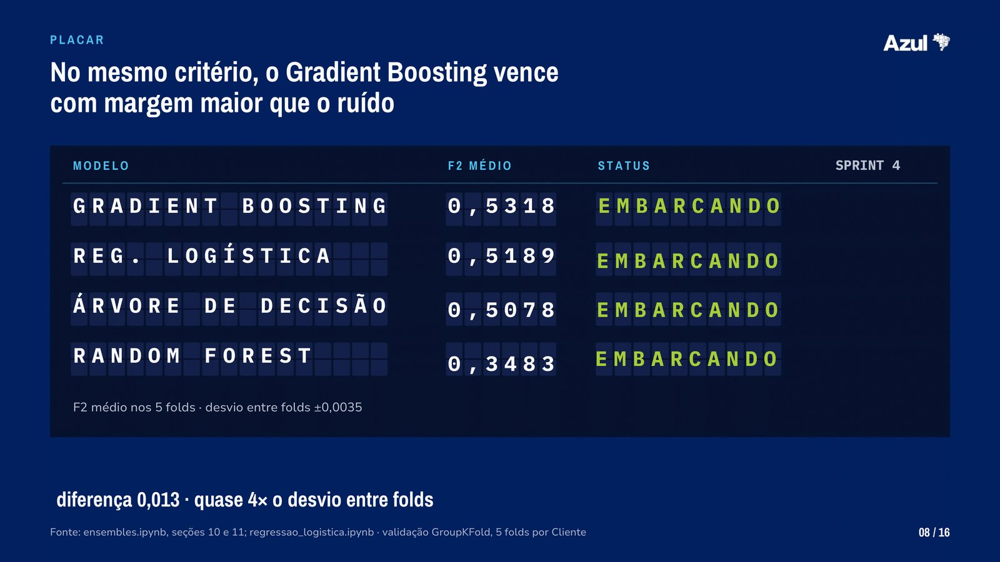
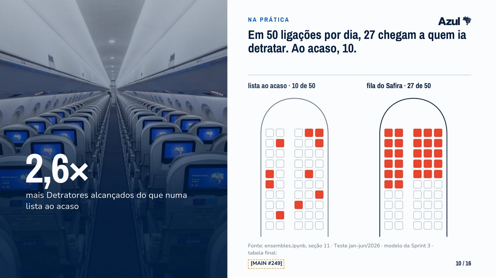
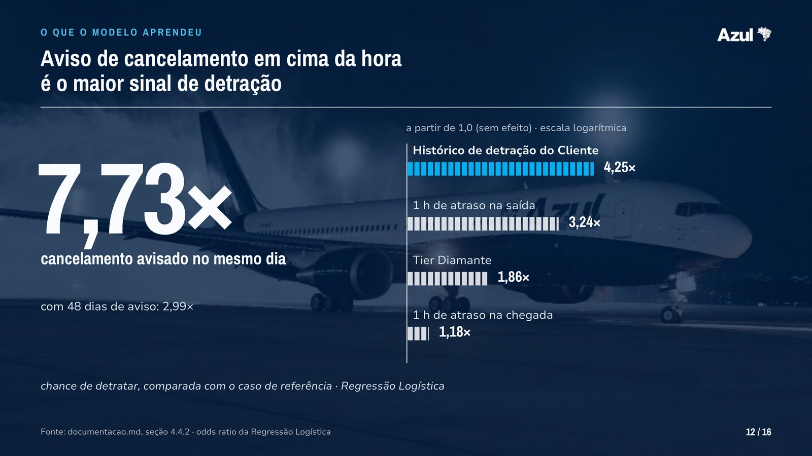

Safira
 Projeto acadêmico do Inteli com a Azul Linhas Aéreas
Projeto acadêmico do Inteli com a Azul Linhas Aéreas

Sobre o projeto
Modelo preditivo de detratores de NPS desenvolvido com a Azul Linhas Aéreas, no Módulo 3 do Inteli. A Azul só descobria quem era Detrator depois que a nota já tinha sido dada. A pesquisa chega um dia após o voo e fica aberta por sete dias, e é nessa janela que ainda dá para recuperar uma experiência ruim. Só que a equipe de Experiência do Cliente atende algumas centenas de casos por dia, enquanto um único fim de semana de mau tempo afeta milhares de passageiros. Faltava um critério objetivo para decidir quem contatar primeiro.
Em um time de 8, seguindo o CRISP-DM, construímos um score de risco de detração calculado ao fim de cada jornada, antes da resposta à pesquisa, usando só dados operacionais e de perfil do Cliente. A base é real: 484.915 respostas de 36 meses de operação doméstica, anonimizadas pela Azul em conformidade com a LGPD. Comparamos seis modelos sob as mesmas regras, e a solução final combina três: um Gradient Boosting calibrado ordena a fila diária de contato, a Regressão Logística explica à Azul os fatores de risco e a Árvore de Decisão traduz esses fatores em regras.
Medido uma única vez num semestre que o modelo nunca viu, com 53.486 respostas, o resultado foi este: na fila diária de 50 contatos, 51 de cada 100 Clientes eram Detratores, contra 20 numa lista ao acaso. A Precisão Média ficou em 0,52, 2,55 vezes o acaso e acima da meta de 0,40, e o ROC-AUC em 0,75. Por trás disso há uma divisão temporal e por Cliente congelada com hash, um contrato de features que impede vazamento de dados e mais de 870 testes automatizados que rodam sem depender da base da Azul.
Tecnologias utilizadas
Minha contribuição
Fui o integrante com mais contribuições no repositório do grupo e atuei do dado à recomendação final. Na análise exploratória, levantei e testei a hipótese do detrator recorrente, que virou uma das variáveis mais fortes do modelo, e fiz o escalonamento das variáveis. Na modelagem, construí o primeiro candidato, as curvas ROC e de precisão-cobertura e a tabela comparativa, e fiquei com os modelos interpretáveis: a Regressão Logística, a leitura dos odds ratio em linguagem de operação e a decisão sobre explicabilidade. Na entrega final, escrevi a avaliação do modelo: por que ele foi escolhido, como ele se sai diante das metas de negócio, o plano de contingência e a verificação das hipóteses.
Galeria

O problema
A Azul já sabia quem tinha detratado, mas só depois da nota. O Safira entra no meio da linha do tempo: o score sai no fim da jornada, antes da pesquisa, e é isso que dá à equipe tempo para agir enquanto a experiência ainda pode ser recuperada.

Base integrada e auditável
Três fontes da Azul (respostas de NPS, informações de viagem e perfil do Cliente) unidas pela chave do respondente, sem alterar os arquivos brutos. A divisão entre treino e teste acontece antes de qualquer ajuste estatístico, para que nenhuma informação do teste vaze para o treino.

A hipótese que eu testei
Quem detratou uma vez tende a detratar de novo: a chance de reincidir é 4,61 vezes maior, mesmo descontando atraso e cancelamento. Esse histórico já existe antes do voo, e por isso virou variável do modelo e uma das que mais pesam na fila.

Métrica escolhida pelo negócio
Antes de treinar qualquer modelo, definimos qual erro custa mais. Deixar um Detrator sem contato perde a chance de recuperação; ligar para um Cliente satisfeito custa só uma ligação. As metas de recall, Precisão Média e ROC-AUC foram fixadas nesse momento, e não depois de ver os resultados.

Seis candidatos, mesmas regras
Da classe majoritária, que serve de piso, até Random Forest e Gradient Boosting. Todos usaram a mesma matriz e a mesma validação cruzada em 5 folds agrupados por Cliente, e o teste ficou intocado até a escolha final. Só assim a comparação é justa.

O placar
Com o mesmo critério para todos, o Gradient Boosting ficou na frente com uma margem quase quatro vezes maior que o desvio entre os folds. Ou seja, a vitória não é ruído da validação. O painel de embarque foi a forma que achamos de mostrar isso para a Azul na linguagem dela.

O resultado na prática
Cada poltrona é uma ligação do dia, e as vermelhas são Detratores. A lista ao acaso acerta poucas; a fila do Safira concentra a maioria no topo. Este slide é da Sprint 4. Na medição final, 51 de cada 100 Clientes contatados eram Detratores, contra 20 ao acaso.

O que o modelo aprendeu
Pela Regressão Logística, um cancelamento avisado no mesmo dia multiplica por 7,73 a chance de detratar, e esse efeito cai para 2,99 quando o aviso vem com 48 dias de antecedência. É uma leitura que a Azul consegue usar direto na operação: o problema não é só cancelar, é avisar tarde.